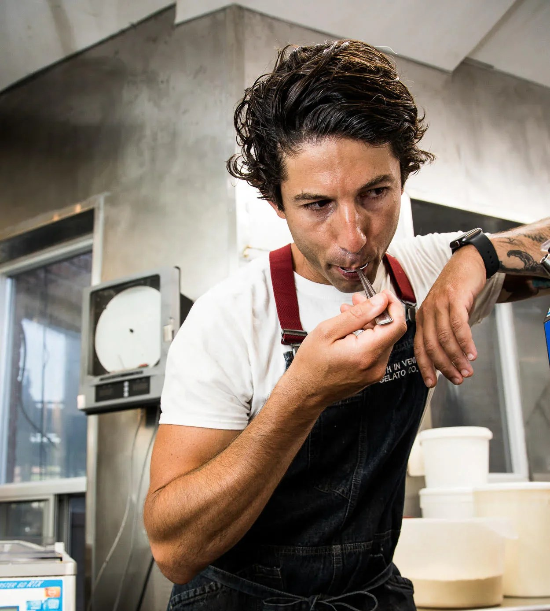

Craig Harding
La Palma
La Palma is known for its modern Italian cooking, combining traditional techniques with a focus on ingredient quality and precision.
849 Dundas St W · Toronto, ON
The chefs
Every dish on BestDish is built by the chef who made it famous. No outsourced recipes. No reformulations. The restaurant cooks it. We carry it.
La Palma
La Palma is known for its modern Italian cooking, combining traditional techniques with a focus on ingredient quality and precision.
849 Dundas St W · Toronto, ON

Pukka
Pukka is known for its commitment to authentic Indian cooking, using fresh, locally sourced ingredients and traditional techniques to deliver bold, balanced flavours.
778 St Clair Ave W · Toronto, ON

Cheese Boutique
Cheese Boutique is one of Canada's most respected specialty food retailers, known for sourcing and aging some of the finest cheeses in the country. Under the leadership of Afrim Pristine, it has become a destination for quality and expertise.
45 Ripley Ave · Toronto, ON

The Queen & Beaver
The Queen & Beaver is a refined gastropub known for classic dishes executed with precision and restraint.
35 Elm St · Toronto, ON

Le Gourmand
Le Gourmand is known for its iconic cookies and long-standing reputation in Toronto.
152 Spadina Ave · Toronto, ON

Slowhand
Slowhand is known for its sourdough-based pizza and its focus on fermentation and technique.
99 Pape Ave · Toronto, ON

Piano Piano
Piano Piano is known for approachable Italian cooking with a focus on consistency and flavour.
55 Colborne St · Toronto, ON

Death in Venice
Death in Venice Gelato Co. is a critically acclaimed, avant-garde gelateria in Toronto's Dundas West neighbourhood. Founded by Kaya Ogruce — a chemical engineer turned professional chef — the shop treats gelato making like a culinary experiment, famous for swapping traditional flavours for complex, gastronomic combinations that balance sweet and savoury profiles.
1418 Dundas St W · Toronto, ON